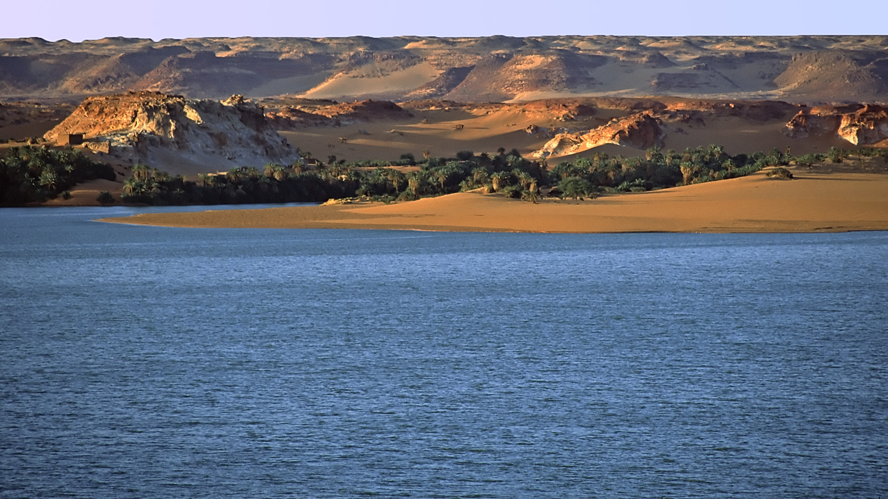
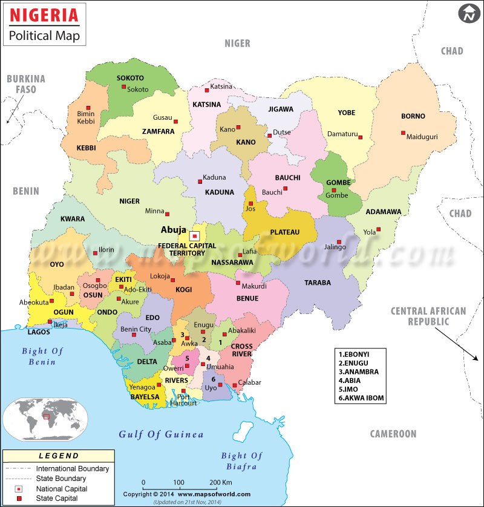

Nigeria
The Flag
The national flag was designed in the year 1960 by Mr. Michael Taiwo Akinkunmi, who was then a student studying in London. His ensign of the national flag was adjudged as the best among the other entries for prestigious National Flag Design Competition held at the university campus. The importance of national flag of Nigeria lies in the fact that each color represents the rich cultural heritage of the country. As the green color represents the fertile land and agricultural diversity of the land while the white stands for peace and unity at the same time representative of the Niger River that passes through the whole country and is invariably a part of its geographical identity.
Map and Statistics

| Population | 195,875,237 |
|---|---|
| Population rank | 7th |
| Area rank | 32nd |
| Capital | Abuja |
| Main languages | English, Hausa, Igbo, Yoruba, Edo |